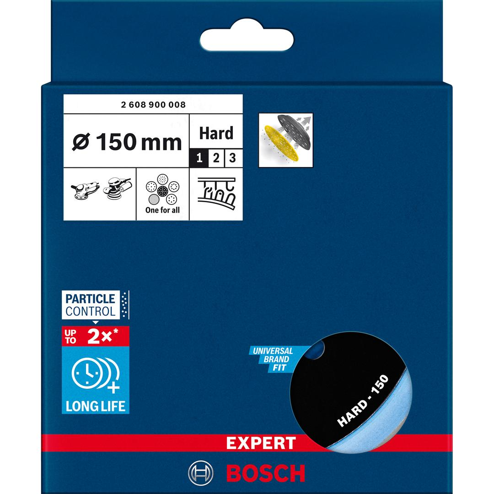
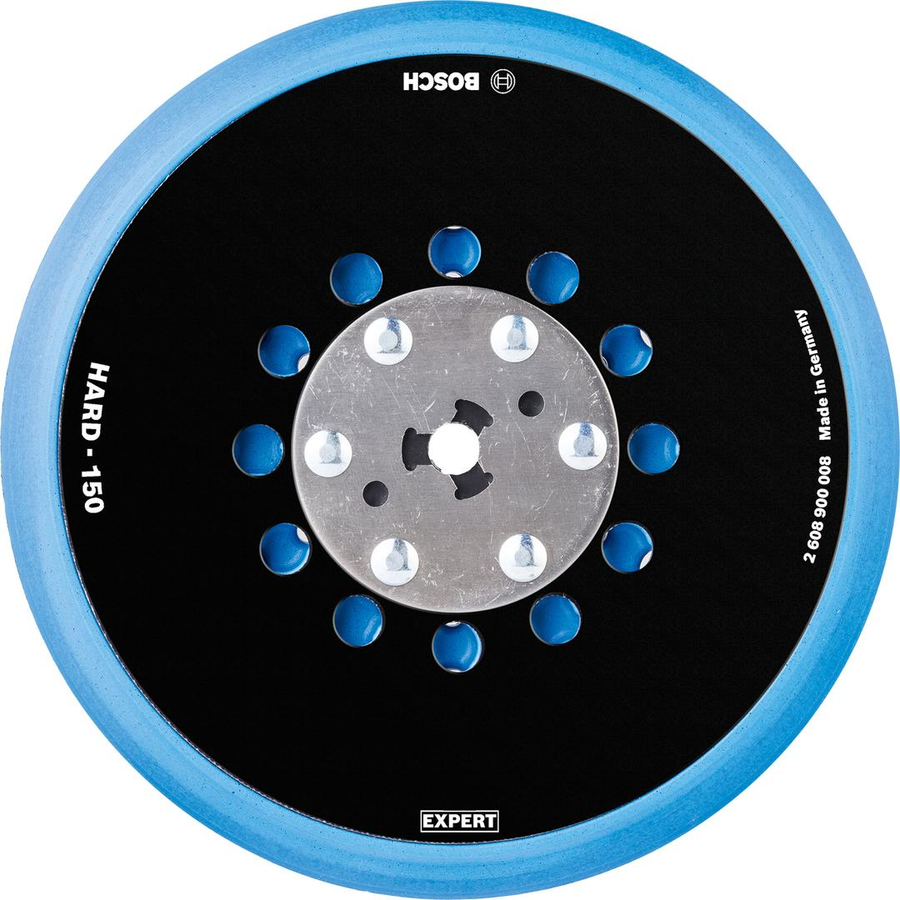

2608900008


| Specification |
hard, 150 mm |
| Suitable for |
GET 75-150; GEX 34-150; GEX 40-150 Professional; 3M; DeWalt; Dynabrade; Festool; Makita; Mirka; Rupes |
| Packaging type |
Paper / Cardboard / Corrugated board - Packaging, tube, with Euro hole |
| Pack quantity |
1 Pcs |
| Minimum order quantity |
1 Pcs |